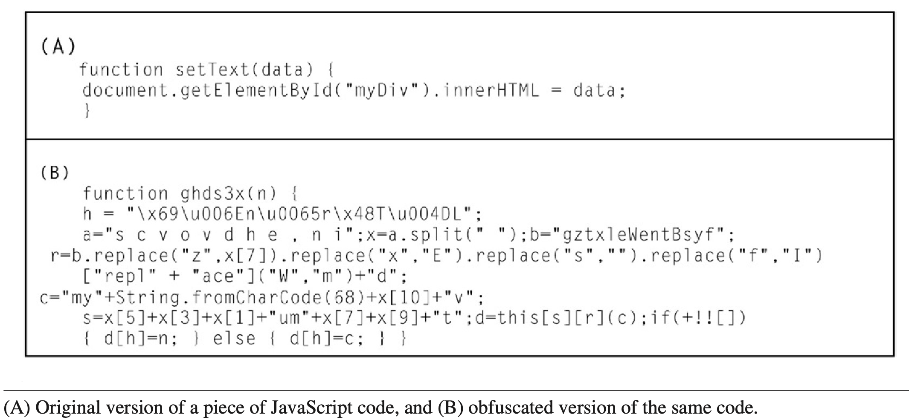

This article explores features of polymorphic malware, and the techniques it uses to dynamically alter its code structures to
become undetectable to anti-malware software, especially as these softwares are created for static malwares. Techniques such as
binary code obfuscation, encryption, and metamorphism, and how they are used by malware to avoid detection are discussed and deliberated.
Although polymorphic malware is able to adapt, it is possible to counter this malware by employing methods such as signature-based,
heuristic-based, and machine learning approaches, and these methods are evaluated.
The article concludes that a combination of these methods may be the most effective way to combat evasive malware. The evolution
of malware outlines the necessity of a multiple approach method to detect these polymorphic threats.
Malware, or malicious software, is characterised by hostile software, typically intended to gain unauthorised access to a computer software. One specific type of malware is polymorphic malware, which is characterised by possessing the ability to change its code structure and appear dynamically. As a result, this type of malware is challenging for antivirus software to detect and mitigate. Another type of malware is metamorphic malware, which, similarly to polymorphic malware, can dynamically alter its code. What distinguishes it from polymorphic malware is that it changes its entire codebase. This means that as the malware infects a system, it rewrites its own code during the process, whilst the core polymorphic malware remains the same. These types of software have the capability to avoid detection by antivirus software, causing them to infiltrate a computer system and possibly being able to steal an individual’s personal data. If this type of malware can evade anti-malware software, why is it so uncommon? This is because there are ways to detect this supposedly undetectable software.
One way in which malware avoids detection is by using the stealth technique of binary code obfuscation. (Alam, Shahid et al) This technique is used to change the appearance of the code by changing the syntax, whilst keeping the contents the same. An example of this is shown in the figure below (Figure 1). (Hosseinzahed, S, 2016)
(Figure 1)
Changing the appearance of the code involves methods such as rearranging instructions, adding meaningless pieces of code that do not affect the functionality of the code, and using encryption methods. All these methods preserve the overall functionality of the malware, causing antivirus software to be unable to detect and eliminate it, especially as these types of software tend to use static analysis methods.
Polymorphic malware employs encryption techniques in order to change what the malware appears to do. In this approach, the primary code body, also known as the payload, is difficult to comprehend due to encryption, and the functionality of the code is restored through decryption. The malicious code has a decryption function embedded within its structure. When the code is executed, this function reads and decrypts the payload before its execution. The encryption and decryption code is mutated with the code. This causes an unlimited number of variations of the original code. Due to this, encryption causes polymorphic code to be difficult to detect, as there are multiple types of one piece of malware. (Catalano, C et al, 2022)
Metamorphism is another technique used in polymorphic malware to hide the functionality of it. Unlike encryption methods, metamorphism changes the opcode every time the malware is executed, whilst also not keeping the same sequences of opcode in memory. Metamorphic malware is typically categotised into two types based on their communication channels. Closed-world malware operates independently without relying on external communication, utilizing either a binary transformer or a metalanguage to generate newly mutated code. On the other hand, Open-world malware has the capability to communicate with external sites on the Internet, allowing it to update itself with new features. (Alam, Shahid et al, 2015)
Typically, anti-malware software is built to detect static code, therefore rendering most software useless against polymorphic malware. One method that is known to be effective is signature-based detection, which examines network traffic, and compares the signatures to those in a known list. This is effective as it can detect when there is a signature the device does not recognise in the network and can find known malware signatures on the network. However, variants of known malware can be made, which would not be detected through signature detection. Therefore, this solution, whilst cheap and easy to implement, can be evaded due to its multiple blind spots. (Masud et al, 2012)
Other methods can be used to overcome the weaknesses of signature-based detection, one being heuristic-based detection. This process uses static and dynamic approaches. The static approach looks for commands or instructions that would not typically be found in a certain application by searching files on the computer system. The dynamic approach creates a virtual machine by simulating a processor and operating system to detect instructions that would not typically be on the system. This method overcomes variants of known malware and is also effective for unknown malware signatures, although it requires a virtual network. This causes the network to be stored on a cloud system, which is susceptible to virus attacks.
Machine learning uses algorithms created from previous analyses of metamorphic malware to make assumptions about a system. It does this by detecting threats as they begin to attack the computer system and finding vulnerabilities within the network. These algorithms have high accuracy, causing this method to become a popular way to detect malware. However, machine learning depends on previous cases of malware attacks to learn about the behaviour of these algorithms. However, machine learning data isn’t common, meaning there isn’t a large set of data for the algorithm to learn from. As a result, the effectiveness of this algorithm may be flawed. (Urwin, M, 2023)
This article outlined polymorphic and metamorphic malware and discussed the detection of malware and how it could be detected. As evidenced by the article, polymorphic malware is very evasive to typical static antivirus software, due to its ability to disguise its opcode using techniques such as binary code obfuscation, encryption, and metamorphism. Although malware is able to disguise itself, in the above article, methods to detect this malware were outlined, like signature methods, heuristic methods and machine learning. Some techniques are considered to be more efficient than others, such as heuristic-based detection, therefore justifying their popularity. However, it is clear that most of these methods used alongside each other may be the most effective way in which to use these software to detect malware.
Alam, Shahid et al. (2015) “A Framework for Metamorphic Malware Analysis and Real-Time Detection.” Computers & security 48 (2015): 212–233. Web.
https://www-sciencedirect-com.surrey.idm.oclc.org/science/article/pii/S0167404814001576?via%3Dihub
Hosseinzahed, S (2016) “Obfuscation and diversification for securing the internet of things (IoT)” 14.3 Obfuscation and diversification techniques
https://www-sciencedirect-com.surrey.idm.oclc.org/science/article/pii/B9780128053959000149?via%3Dihub#s0035
Catalano, C. et al (2022) “Deceiving AI-Based Malware Detection through Polymorphic Attacks.” Computers in industry 143: 103751-. Web.
https://www-sciencedirect-com.surrey.idm.oclc.org/science/article/pii/S0166361522001488?via%3Dihub
Sharma, Ashu and Sahay, S.K “Evolution and Detection of Polymorphic and Metamorphic Malwares: A Survey “3. DETECTION TECHNIQUES”
https://research.ijcaonline.org/volume90/number2/pxc3894098.pdf
Masud et al (2012) Data Mining Tools for Malware Detection. Boca Raton, Fla: CRC Press. Web.
https://ebookcentral.proquest.com/lib/surrey/reader.action?docID=826949
Urwin, M (2023) Machine Learning in Cybersecurity: How It Works and Companies to Know Available at: https://builtin.com/artificial-intelligence/machine-learning-cybersecurity (Accessed: 21st November 2023)
https://builtin.com/artificial-intelligence/machine-learning-cybersecurity